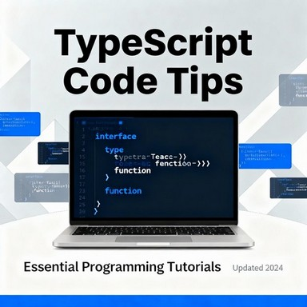

Вступ
TypeScript надає потужні інструменти для типізації JavaScript коду. У цій статті розглянемо 10 корисних тріків, які допоможуть вам писати більш ефективний та безпечний код.
1. Utility Types для трансформації типів
TypeScript надає вбудовані utility types для маніпуляції з типами:
interface User {
id: number;
name: string;
email: string;
password: string;
}
// Робимо всі поля опціональними
type PartialUser = Partial<User>;
// Вибираємо тільки потрібні поля
type PublicUser = Pick<User, 'id' | 'name' | 'email'>;
// Виключаємо небажані поля
type UserWithoutPassword = Omit<User, 'password'>;
// Робимо всі поля обов'язковими
type RequiredUser = Required<PartialUser>;
2. Conditional Types
Створюйте типи, які залежать від умов:
type ApiResponse<T> = T extends string
? { message: T }
: T extends number
? { count: T }
: { data: T };
type StringResponse = ApiResponse<string>; // { message: string }
type NumberResponse = ApiResponse<number>; // { count: number }
type ObjectResponse = ApiResponse<User>; // { data: User }
3. Template Literal Types
Створюйте типи на основі шаблонних рядків:
type HttpMethod = 'GET' | 'POST' | 'PUT' | 'DELETE';
type ApiEndpoint = 'users' | 'posts' | 'comments';
type ApiUrl = `/${ApiEndpoint}`;
type ApiAction = `${HttpMethod} ${ApiUrl}`;
// Результат: "GET /users" | "POST /users" | "PUT /users" | ...
type EventName<T extends string> = `on${Capitalize<T>}`;
type UserEvents = EventName<'create' | 'update' | 'delete'>;
// Результат: "onCreate" | "onUpdate" | "onDelete"
4. Mapped Types для динамічного створення типів
type EventHandlers<T> = {
[K in keyof T as `on${Capitalize<string & K>}`]: (value: T[K]) => void;
};
interface FormData {
name: string;
age: number;
email: string;
}
type FormHandlers = EventHandlers<FormData>;
// Результат:
// {
// onName: (value: string) => void;
// onAge: (value: number) => void;
// onEmail: (value: string) => void;
// }
5. Type Guards для runtime перевірок
interface Cat {
type: 'cat';
meow: () => void;
}
interface Dog {
type: 'dog';
bark: () => void;
}
type Animal = Cat | Dog;
// Type guard функція
function isCat(animal: Animal): animal is Cat {
return animal.type === 'cat';
}
function handleAnimal(animal: Animal) {
if (isCat(animal)) {
animal.meow(); // TypeScript знає, що це Cat
} else {
animal.bark(); // TypeScript знає, що це Dog
}
}
6. Assertion Functions для валідації
function assertIsNumber(value: unknown): asserts value is number {
if (typeof value !== 'number') {
throw new Error('Expected number');
}
}
function processValue(value: unknown) {
assertIsNumber(value);
// Після assertion TypeScript знає, що value це number
return value.toFixed(2);
}
7. Recursive Types для складних структур
type JsonValue =
| string
| number
| boolean
| null
| JsonObject
| JsonArray;
interface JsonObject {
[key: string]: JsonValue;
}
interface JsonArray extends Array<JsonValue> {}
// Тепер можна типізувати будь-які JSON дані
const data: JsonValue = {
name: "John",
age: 30,
hobbies: ["reading", "coding"],
address: {
street: "Main St",
city: "NYC"
}
};
8. Index Signatures з Template Literals
type CssProperties = {
[K in `--${string}`]: string;
} & {
[K in keyof CSSStyleDeclaration]?: string;
};
const styles: CssProperties = {
'--primary-color': '#007bff',
'--secondary-color': '#6c757d',
color: 'red',
fontSize: '16px'
};
9. Branded Types для типової безпеки
// Створюємо "брендовані" типи
type UserId = number & { readonly brand: unique symbol };
type PostId = number & { readonly brand: unique symbol };
function createUserId(id: number): UserId {
return id as UserId;
}
function createPostId(id: number): PostId {
return id as PostId;
}
function getUser(id: UserId): User {
// ...
}
function getPost(id: PostId): Post {
// ...
}
const userId = createUserId(123);
const postId = createPostId(456);
getUser(userId); // ✅ Працює
getPost(postId); // ✅ Працює
getUser(postId); // ❌ Помилка компіляції!
10. Advanced Function Overloads
interface CreateElementOptions {
tag: string;
props?: Record<string, any>;
children?: string | Element[];
}
// Overloads для різних сигнатур
function createElement(tag: 'input'): HTMLInputElement;
function createElement(tag: 'div'): HTMLDivElement;
function createElement(tag: 'button'): HTMLButtonElement;
function createElement(options: CreateElementOptions): HTMLElement;
function createElement(
tagOrOptions: string | CreateElementOptions
): HTMLElement {
if (typeof tagOrOptions === 'string') {
return document.createElement(tagOrOptions);
}
const element = document.createElement(tagOrOptions.tag);
if (tagOrOptions.props) {
Object.assign(element, tagOrOptions.props);
}
if (tagOrOptions.children) {
if (typeof tagOrOptions.children === 'string') {
element.textContent = tagOrOptions.children;
} else {
element.append(...tagOrOptions.children);
}
}
return element;
}
// Використання з автодоповненням типів
const input = createElement('input'); // HTMLInputElement
const div = createElement('div'); // HTMLDivElement
const custom = createElement({ // HTMLElement
tag: 'span',
props: { className: 'highlight' },
children: 'Hello World'
});
Бонус: Налаштування tsconfig.json
{
"compilerOptions": {
"strict": true,
"noUncheckedIndexedAccess": true,
"exactOptionalPropertyTypes": true,
"noImplicitReturns": true,
"noFallthroughCasesInSwitch": true,
"noUncheckedIndexedAccess": true,
"allowUnreachableCode": false,
"allowUnusedLabels": false
}
}
Поради для ефективного використання
- Використовуйте const assertions - для точнішої типізації
- Уникайте any - використовуйте unknown замість нього
- Створюйте utility types - для багаторазового використання
- Документуйте складні типи - додавайте коментарі
- Використовуйте строгі налаштування - для кращої безпеки типів
Висновки
TypeScript надає потужні можливості для створення типобезпечного коду. Ці тріки допоможуть вам писати більш надійні та підтримувані застосунки. Пам'ятайте: гарна типізація — це інвестиція в майбутнє вашого проекту.